Exploremos el significado del parámetro  en las ecuaciones 3.1 y 3.3. La Figura 3.1 muestra las funciones de pertenecia de dos números difusos trapezoidales
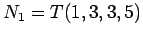 y
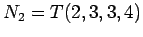. Estamos interesados en ordenar esos números, es decir, en decidir cúal de los dos es ``mayor'' que el otro.
en las ecuaciones 3.1 y 3.3. La Figura 3.1 muestra las funciones de pertenecia de dos números difusos trapezoidales
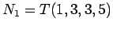 y
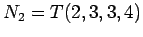. Estamos interesados en ordenar esos números, es decir, en decidir cúal de los dos es ``mayor'' que el otro.
Si seleccionamos
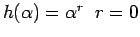 en la ecuación 3.3, podemos calcular el valor representativo de 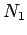 y 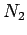 como una función de  . Los resultados se muestran en la figura 3.2. Nótese que para
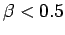 el valor represe4ntaivo de es mayor que el de ; lo contrario sucede para
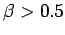; para 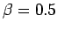 ambos números difusos tienen el mismo valor representativo.
. Los resultados se muestran en la figura 3.2. Nótese que para
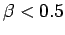 el valor represe4ntaivo de es mayor que el de ; lo contrario sucede para
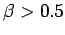; para 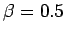 ambos números difusos tienen el mismo valor representativo.
Nuestra interpretación lingüística de este ejemplo es la siguiente: Un ordenamiento optimista de y () es que es mayor que , porque esperamos un valor real de mejor que el de . De<otro olado, un ordenamiento pesimista de y () es que es menor que , porque esperamos un valor de peor que el de .
Nótese que tanto como están centrados en 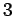 y tienen una forma simétrica alrededor de ese centro. Para valores altos de  () el valor representativo estará a la derecha de ese centro; para la distancia entre elr y el centro es mayor que para , porque el número es más ancho, lo que significa que hay una mayor incertidumbre respecto a su valor actual.
() el valor representativo estará a la derecha de ese centro; para la distancia entre elr y el centro es mayor que para , porque el número es más ancho, lo que significa que hay una mayor incertidumbre respecto a su valor actual.
| 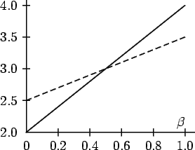 |